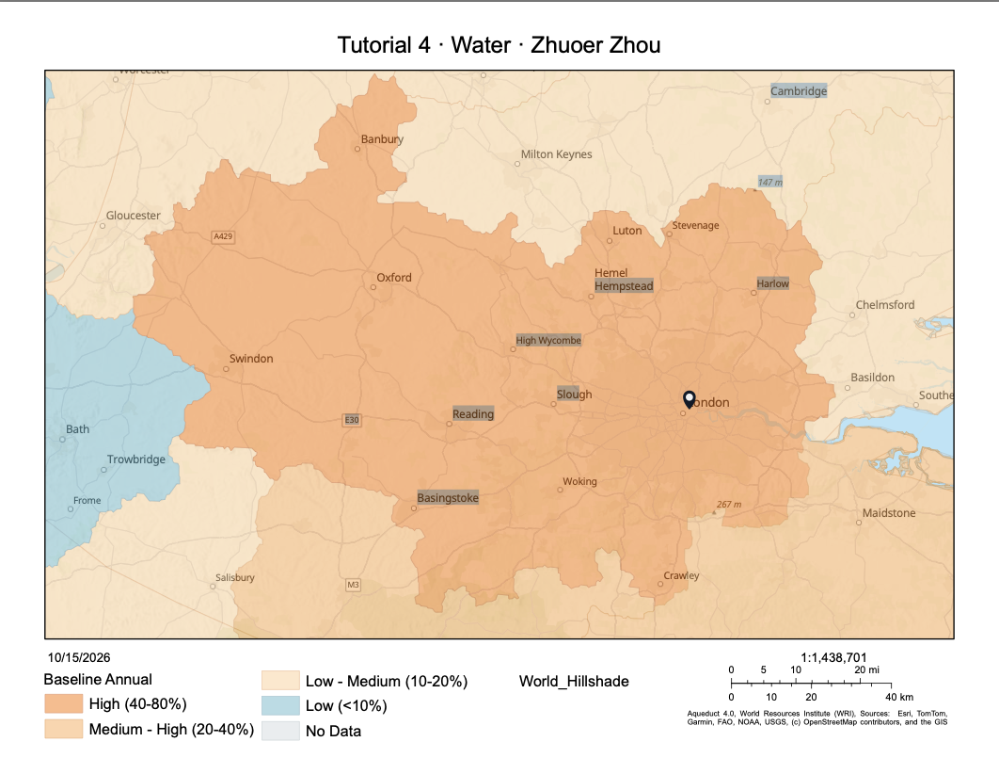

Week 05 · October 2026
Where Water Flows: Catchments and Water Stress
The question
Where does water at Trafalgar Square in central London come from, and where does rainfall runoff go? How do natural drainage connectivity, proximity to infrastructure, and adjacency across watershed divides shape our understanding of urban water systems?
The data
For catchment delineation, I used the Global Watersheds app with MERIT-Hydro (2021) and HydroSHEDS (2013), both at lower precision. The datasets provide different representations of drainage networks and catchment boundaries. Their licensing terms should be read from their respective dataset documentation: MERIT-Hydro documentation and HydroSHEDS product documentation.
For water stress, I used WRI Aqueduct 4.0, including the Baseline Annual and Baseline Monthly layers. Aqueduct 4.0 is licensed under Creative Commons Attribution 4.0 International (CC BY 4.0). Its baseline period is 1979–2019, with a data vintage of April 2023. Water stress is a dimensionless ratio of withdrawals to available supply, while polygon area is measured in square kilometres.
The method
I entered the coordinates of Trafalgar Square (51.5080° N, 0.1281° W) into the Global Watersheds app. The MERIT-Hydro lower-precision result returned a catchment of approximately 180 km², with the snapped outlet approximately 66 km from the requested point. The HydroSHEDS lower-precision result returned a catchment of approximately 11,000 km², with the returned outlet close to the requested coordinates. I could not select the higher-precision option, so the comparison is incomplete.
In Aqueduct's Baseline Annual layer, my site's water stress value was 0.522, classified as High (40–80%). The polygon containing the site covers 13,353 km². Assuming a site area of 0.1 km², as suggested in the assignment, the polygon is approximately 133,530 times larger than the site. In the Baseline Monthly layer, the highest value was 0.816 in September and the lowest was 0.230 in January.
The evidence

The two catchment delineations did not agree: MERIT-Hydro returned a much smaller area and a snapped outlet approximately 66 km away, whereas HydroSHEDS returned a much larger area and an outlet close to the requested coordinates. This difference suggests that the result is sensitive to the dataset and delineation settings. The Aqueduct polygon is also much larger than the study site, so its water stress value should not be interpreted as a measurement of conditions at Trafalgar Square alone.
What I found
The annual water stress value was 0.522, classified as High (40–80%). Monthly values varied substantially, reaching 0.816 in September and falling to 0.230 in January. This shows that the annual figure does not fully describe the seasonal pattern. The September value was approximately 3.55 times the January value.
The Thames–Lee Tunnel transfers raw water from the River Thames towards the Lee Valley Reservoirs in north-east London. It illustrates how engineered infrastructure can transfer water beyond what a natural drainage map alone describes. However, I could not verify that the tunnel crosses the specific watershed divide shown in my delineation. My two available catchment results also differed substantially, so I cannot treat their boundaries as interchangeable.
What this does not show
I am using the delineated catchment boundary to stand for where runoff from Trafalgar Square goes, and it might fail because the delineation does not represent engineered pipes or water transfers. It therefore describes natural drainage rather than the full urban water supply and drainage network.
I am using baseline water stress to stand for water adequacy at my site, and it might fail because the index measures withdrawals relative to available supply over a much larger area, rather than local tap-water availability or potability. The monthly values also show that the annual indicator can conceal seasonal peaks.